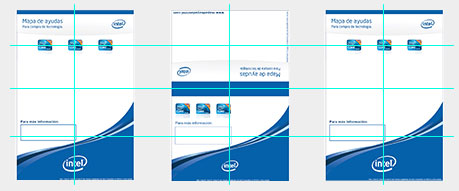

Diseño de sitio web, impresos y cartelería.Durante la crisis bursatil mundial de 2008 - 2009, debido a la carencia de crédito, en España la empresa Intel Corporation decide poner al alcance de las pequeñas y medianas empresas la información sobre cómo obtener ayudas económicas o subvenciones que les facilitarían la adquisición de equipo de cómputo y componentes. El trabajo de diseño consitió en la realización de una interfaz que permitiera filtrar de manera adecuada las distintas ayudas por tipos, provincias, secciones, etc. También se realizaron las plantillas para los impresos que incluyen materiales promocionales, carteles, dípticos y flyer. |